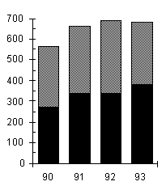

Ques Refer the graph below to answer the question.
PROFIT AND REVENUE DISTRIBUTION FOR ZIPPY PRINTING, 1990–1993, COPYING AND PRINTING.
Total Profit Total Revenue
(in thousands of dollars) (in millions of dollars)
 
Distribution of Profit from Copying, 1992
(in thousands of dollars)

In 1990, the profit from copying was approximately what percent of the revenue from copying?
Solution:The
Total Revenue graph indicates that in 1990 the revenue from copying was about
$2,600,000. The Total Profit graph shows the profit from copying in that same
year was about $270,000. The profit margin is
=
Profit
Revenue
≈ 10%
270,000
2,600,000
The answer is (B).